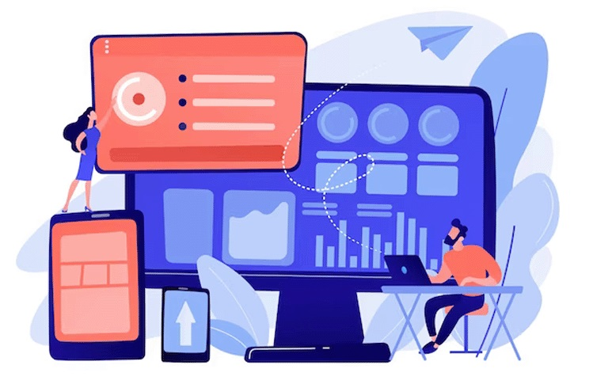

Regresar al menú principal
Sobre nuestros servicios en TechNexus SAS
Servicios principales:
- Desarrollo de Software Personalizado: Creamos aplicaciones y programas a medida para satisfacer las necesidades específicas de su negocio.
- Inteligencia Artificial y Aprendizaje Automático: Implementamos soluciones de IA para optimizar procesos, mejorar la toma de decisiones y ofrecer experiencias personalizadas.
- Consultoría en Transformación Digital: Guiamos a su empresa a través de la transformación digital, identificando oportunidades y diseñando estrategias para aprovechar al máximo la tecnología.
- Diseño de Experiencia de Usuario (UX/UI): Creamos interfaces intuitivas y atractivas para garantizar que sus productos y servicios brinden una experiencia excepcional al usuario.
- Seguridad Cibernética: Protegemos su infraestructura digital y sus datos contra amenazas cibernéticas con soluciones de seguridad avanzadas y estrategias de mitigación de riesgos.
Servicios complementarios:
- Desarrollo de Aplicaciones Móviles: Diseñamos y desarrollamos aplicaciones móviles nativas e híbridas para iOS y Android, desde concepto hasta lanzamiento en tiendas de aplicaciones.
- Internet de las Cosas (IoT): Creamos soluciones conectadas para habilitar la recopilación de datos, la automatización y el control remoto de dispositivos a través de Internet.
- Big Data y Análisis Predictivo: Ayudamos a su empresa a extraer información valiosa de grandes conjuntos de datos y a utilizarla para tomar decisiones más informadas y estratégicas.
- Desarrollo de Blockchain: Implementamos tecnología blockchain para garantizar la seguridad, la transparencia y la trazabilidad en sus operaciones y transacciones.
- Servicios de Nube y Computación en el Borde: Optimizamos su infraestructura de TI mediante la migración a la nube, la implementación de arquitecturas de nube híbrida y la habilitación de la computación en el borde para mejorar el rendimiento y la escalabilidad.

¡Descubra el futuro de la tecnología con TechNexus SAS!
Únase a nosotros en este emocionante viaje hacia el futuro de la tecnología. ¡En TechNexus SAS, el mañana comienza hoy!
Regresar al menú principal